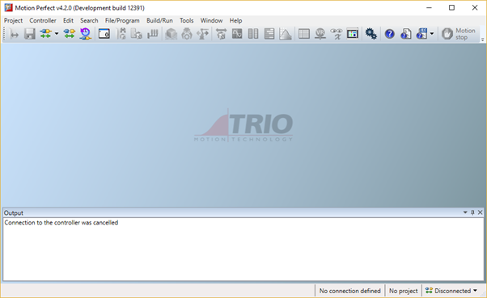
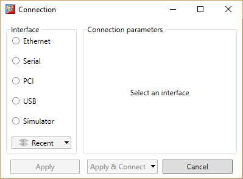
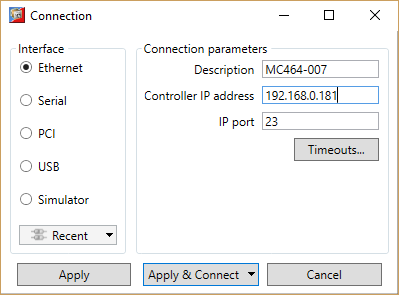

Initial Connection
To make the initial connection to a controller:
-
Make
sure that your controller is powered up and connected to the computer
-
Start
Motion Perfect 3. Once it has started up the initial screen should be displayed.

-
Select
"Connect in Direct mode" from the "Controller" menu. As
Motion
Perfect has not been connected before the "Connection" dialog will be
displayed.

-
Select
the communications interface used by your controller (this will usualy be
Ethernet), then enter it's parameters. For an Ethernet connection this will be
the IP address (defailt 192.168.0.250) and the TCP port (default 23).

-
Click
on the "Apply & Connect" button. The "Connect" will
close and
Motion Perfect will go into Direct Mode with an active
Terminal tool.
-

Motion Perfect will remember the last used connection parameters
and will automatically try and use them when reconnecting in Direct Mode in the
future.